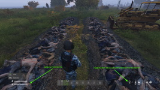

В разделе собраны самые необходимые знания о серверах DayZ OGSurv
Вопрос: Как правильно сменить ник в игре?
Ответ: Для этого доcтаточно в лаунчере, напротив нужной вам игры, нажать кнопку Cменить ник в игре и в Блокноте откроется текстовый файл. Почти в самом начале файла (4 строка) есть параметр -name=Nickname, в котором вы можете поменять базовый ник на тот, который хотите видеть в игре. Например: -name=Odinochka , после чего просто зайкроте файл с сохранением изменений. Если хотите играть в команде с одинаковым названием, то добавьте префикс с круглыми скобками. Например: -name=(Volki)Odinochka
!ВНИМАНИЕ! Ничего другого в этом файле, без дополнительных инструкций, не менять/не удалять/не добавлять! Это приведёт к неработоспособности игры и невозможнсти подключения клиента к серверам!
Вопрос: Карта есть?
Ответ: Да. На клавише М (Ь). Для всех трёх локаций. С возможность ставить и снимать маркеры.
Вопрос: Как написать в игровой чат и как создать группу?
Ответ: Общий игровой чат открывается по клавише Enter. Для переключения между общим чатом и ближним (в радиусе порадка 20 метров) нажмите клавишу Z (Я).
Ответ: Группу можно создать по клавише P (З). Выбрав другого человека в списке отправляете ему запрос о том, что вы приглашаете его. Он, в свою очередь, должен проделать тоже самое, только принять приглашение. После чего вы сможете видеть местоположение друг друга в игре.
Вопрос: У меня персонажа тошнит, в глазах рябит, чихает, падает в обморок. Что с ним?
Ответ: На серверах OGSurv используется модификация Medical Attention, которая расширяет и дополняет характеристики самочувствия главного героя. Поэтому эти явления указывают на то, чем болен персонаж.
Логично, что если чихает, то простыл - согреваемся у костра, едим антибиотики (тетрациклин).
Тошнит - отравление или холера - едим уголь.
Зрение расфокусируется - раневая инфекци - едим антибиотики (тетрациклин).
Не пить воду из грязных источников. Для очитски воды использовать кипячение или таблетки для очистки воды (хлорные).
Ответ: Глаза закрываются и персонаж зевает - слева внизу есть шкала усталости (см. скриншот). Персонажу необходимо отдыхать - спать. Если спать просто так, то усталость восстанавливается до 50%, у источника тепла до 100%. Спать на матрасе/спальном мешке/шкуре крупного животного можно без костра до восстановления усталости на 100% ночью и до 75% днём.
Для того, чтобы лечь спать, открываем допменю клавишей Ю (>) - Прочее - Прилечь.
Ответ: В некоторых местах (больницы, скопления трупов) существует высокая опасность биологического заражения (см. скриншот). При попадании в такие места, справа внизу, возле иконок воды-еды, появится значок черепа с костями. При длительном нахождении в таких местах без средств индивидуальной защиты (противогазы, респираторы, закрытые шлемы, прорезиненная одежда) 100% приведёт к быстрой смерти. Максимальную защиту даёт костюм ОЗК и противогаз любого типа.
Ответ: Помимо вероятности сломать ноги при падении с большой высоты, которая была введена разработчиками в 1.11 (такие переломы лечатся наложением шины (пара веток + тряпка/бинт) или использвоанием обезболивающих для возможности хотьбы), модификацией Medical Attention добаляется вероятность сломать руки при блокировке руками ударов зомби. При переломе руки персонаж не может залезать на предметы. Все переломы сами проходят через некоторое время (с наложенной шиной ноги выздоравливают быстрей и персонаж может ходить, а не только ползать).
!ПОЛЕЗНО ЗНАТЬ! Обязательно носите перчатки - серьёзно снизите риск заболевания пресонажа при схватках с зомби, разделке еды, питье воды с рук. Старайтесь не допускать ранений от зомби, они могут заразить вас различными болезнями через раны.
!ПОЛЕЗНО ЗНАТЬ! 100% определить, чем болен персонаж, может набор для определения группы крови, рекомендую всегда иметь их запас.
Вопрос: Еда портится, что делать?
Ответ: Как и в оригианльной игре, еда (не консервы) в OGSurv через некоторое время приходит в негодность. Происходит это приблизительно за 4~5 игровых дня. Дабы этого избежать, еду можно и нужно хранить в работающем холодильнике (от аккумуляторов или генератора) или в любой емкости с рассолом (заполнить на 100% водой и кинуть кристаллы соли). Естественно что со временем аккумуляторы будут разражаться, а соль расходоваться. Приготовленная еда, при таких способах хранения, храниться дольше чем сырая.
Вопрос: Куда делся весь бензин с автозаправок и запчасти для машин?
Ответ: Естественно, что топливо с автозаправок (хотя в глухих местах они могут быть не тронуты) было выкачено ещё в первые дни зомбиапокалипсиса, но есть возможность слить топливо (в любую ёмкость со стороны горловины бензобака) с брошенных машин. С них же можно достать различные детали (свечи, лампы, радитор, аккумулятор) используя гаечный ключ.
Двигатель машины ремонтируется разводным ключом.
Вопрос: Как-то маловато гвоздей, не могу базу большую построить?
Ответ: Используя плоскогубцы, на гвозди можно настрогать проволоку.
Вопрос: А как рейдить базы? И как сломать кодлок (цифровой замок)?
Ответ: Кроме стандартных способов, предусмотренных разработчиками (долго бить чем-то тяжёлым, потратить уйму патронов, десяток гранат), можно интеллектуально подобрать 4-х значный код к обычному замку или сломать цифровой замок (кодлок). Кодлок нужно долго пилить и наконец спилить ножовкой по металлу или использовать "CodeLock Jammer" (цифровой взломщик). "CodeLock Jammer" собирается из портативной рации с помощью набора электрика.
Вопрос: Как разобрать шкафы, столы, холодильники и другие предметы из зелёных коробок?
Ответ: Используя отвертку/плоскогубцы/молоток можно снова их "упаковать" в коробку.
!ПОЛЕЗНО ЗНАТЬ! Для запирания некоторых типов шкафов, также можно использовать цифровой замок (кодлок).
!ПОЛЕЗНО ЗНАТЬ! Во избежание пропажи машины, при длительном отсутствии, желательно накрывать её камуфляжной сеткой. Если машина пропала, стоило вам отвернуться и отойти немного, то попробуйте перезайти в игру. К сожалению, такое поведение часто для DayZ, хотя разработчики и борются с этим багом от версии к версии.
!ВАЖНО ЗНАТЬ! Каждый 6 часов происходит перезагрузка сервера. Это официальная процедура, предназначена для сброса накопившихся ошибок. Перед отключением всем игрокам приходит сообщение с напоминанием о необходимости покинуть сервер до момента его отключения. Перезагрузка сервера длится от 1 до не более 5 минут. После чего вы можете снова продолжить игру с того же места где вышли.
По мере накопления частых вопросов, раздел будет пополняться, в том числе в виде картинок.